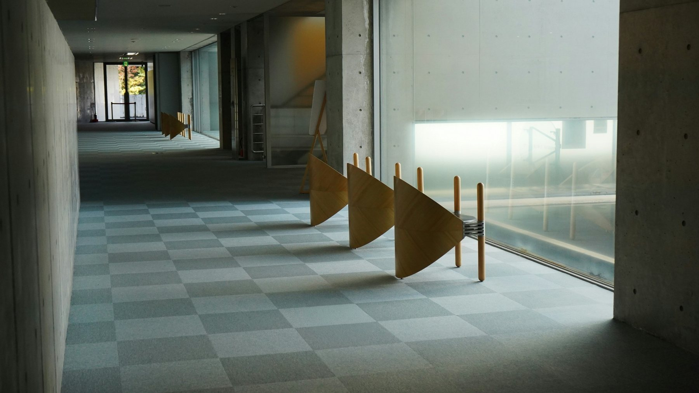

Entre o que está escrito e o que precisa ser feito, existe um mundo. É nele que trabalhamos.
A palavra advocacia carrega uma ideia antiga e simples: chamar alguém em auxílio. O advogado é aquele que é chamado para estar ao lado de outra pessoa quando a linguagem cotidiana já não basta e é preciso transformar uma experiência, um interesse ou um conflito em uma questão juridicamente compreensível.
É essa dimensão humana que queremos preservar. Não defendemos apenas direitos em abstrato. Defendemos, sobretudo, interesses dignos de quem nos procura. O Direito importa porque toca patrimônio, liberdade, família, trabalho, escolhas e projetos de vida.
Por isso, entendemos a advocacia como uma atividade de responsabilidade. Escutar antes de responder. Compreender antes de argumentar. Pesquisar antes de concluir.
Não acreditamos em respostas jurídicas produzidas por automatismo. Uma norma não dispensa interpretação. Um precedente não elimina a necessidade de compreender os fatos. Uma decisão judicial não encerra, por si só, a investigação sobre o problema.
Tratamos o Direito como uma prática social interpretativa. A decisão judicial é uma decisão institucional do Estado e, como tal, possui uma dimensão política: ela define, no caso concreto, quais sentidos jurídicos prevalecem e quais consequências serão produzidas. Isso não transforma o Direito em mero exercício de vontade. Ao contrário: torna ainda mais importante a fundamentação, a coerência, a integridade e a responsabilidade argumentativa.
É no caso concreto, limitado e singular, que uma ideia de justiça pode ganhar forma jurídica. Não uma promessa de justiça absoluta, mas a busca rigorosa pela resposta que melhor se sustente diante da Constituição, da legislação, dos fatos, das provas e das razões apresentadas.
Por isso, acreditamos na ciência como parte do ofício. Estudamos teoria da argumentação, construção de teses, interpretação, jurisprudência, dados e evidências porque uma boa posição jurídica não deve depender apenas de retórica. Ela deve poder ser examinada, criticada, confrontada e aperfeiçoada.

Também acreditamos que a linguagem não é acabamento. Ela é parte da própria construção do Direito. Uma ideia mal formulada pode esconder um problema. Uma distinção mal feita pode produzir uma conclusão errada. Uma narrativa mal organizada pode impedir que um fato seja juridicamente percebido.
É por isso que escrevemos. E é por isso que pensamos a comunicação como parte do trabalho.
Queremos falar com rigor sem transformar o rigor em obscuridade. Queremos escrever textos densos sem desperdiçar palavras. Queremos que a complexidade permaneça complexa onde precisa permanecer, mas que o caminho até ela seja claro.
Não simplificar o pensamento.
Simplificar o caminho até ele.
A Couto & Pedreira nasce desse compromisso: levar a sério a pessoa, o problema, o Direito e as consequências.
O resto começa quando abrimos o caso e começamos a escutar.